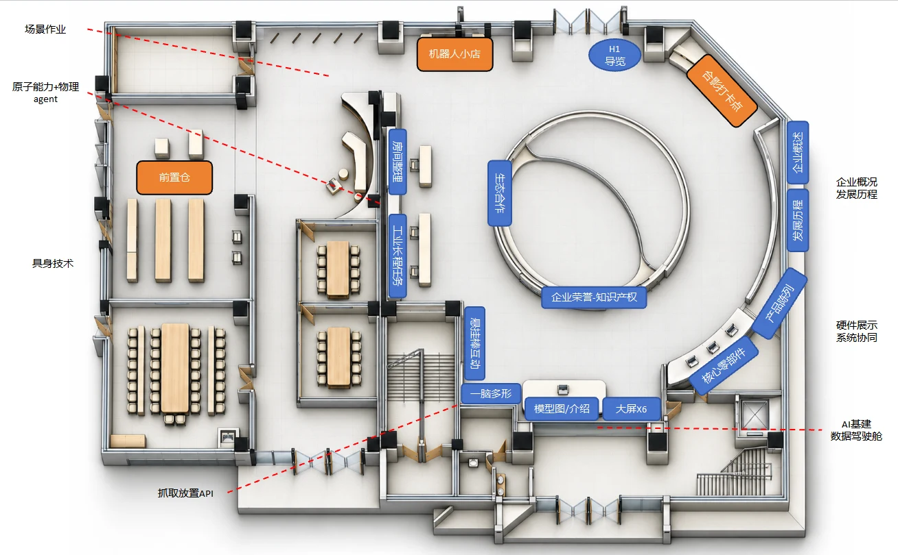

请使用支持 WebGL 的 Chrome 或 Edge 浏览器。
正在布置展厅…
Z
ZERITH
零次方 · 合肥展厅
↙ 回到全景
地图对照
俯视视角
全屏
H1 导览机器人
为您讲解
入口出发
更新地图 · 16站导览
合肥具身智能展厅
−
由入口的 H1 机器人带您沿新地图参观。
设备二 · 指定抓取顺序
调整后演示从第一件重新开始
放大 ZERITH V2 系统图 ↗
核心零部件展开
上一站
开始参观
下一站
拖动旋转 · 滚轮缩放 · 点击展区直达
REFERENCE / 本次更新依据
新地图对照
×
通道修正
分区图
尺寸网格
算法架构
悬挂棒参考
产品陈列
核心零部件

入口西北侧通道向西，再向南连接前置仓与各会议室；展项沿环廊布置。